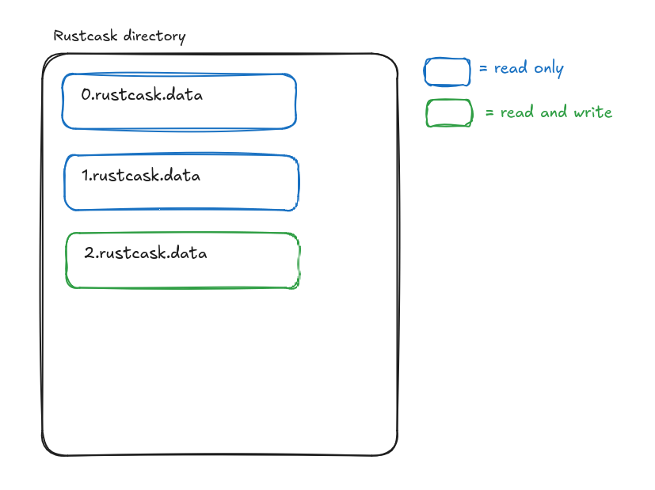
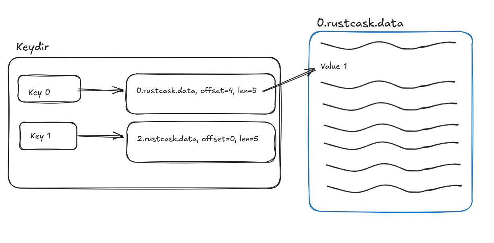
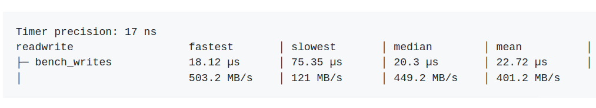
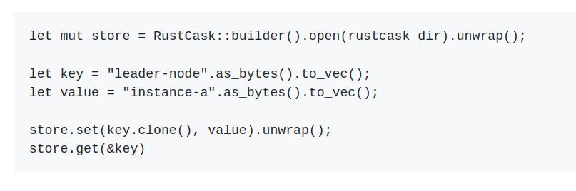
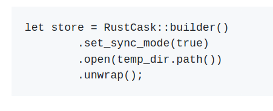

08/21/2024
Rustcask
I recently released Rustcask to
Github and
crates.io.
Rustcask is a fast and efficient key-value storage engine implemented in Rust. It's based on
Bitcask, "A Log-Structured Hash Table for Fast Key/Value Data".
Here are some interesting sections that I've copied from the
README on Github:
Design
Bitcask
Rustcask follows the design of Bitcask very closely. A Rustcask directory is composed of data files. At any time,
there is only one active data file. Writes are appended to that data file, and once it reaches a certain size,
the file is closed and marked read-only.

An in-memory data structure (see
keydir.rs) maps each key to the data file and offset of the
most recently written value for that key. This means that reads require only a single disk seek.
On restarts, Rustcask traverses data files within the Rustcask directory to rebuild the keydir.

By writing values to disk sequentially, Bitcask and Rustcask are able to achieve high write throughput.
However, this append-only strategy means that stale (overwritten) values accumulate in the data files. This is why Bitcask and Rustcask
provide a
merge function, which compacts data files and removes stale keys. In production environments, managing background data file compaction
without affecting the key-value store's performance is a tricky problem.
Rustcask vs. Log-Structured Merge-Trees (LSM-trees) like LevelDB
What are the benefits of Rustcask over LSM-tree-based storage engines?
Rustcask's design is much simpler than LSM-tree storage engines like LevelDB. As such, it's an easy code base to maintain.
Additionally, Rustcask has less read amplification than LevelDB. For example, as described in the
WiscKey paper, LevelDB has high read amplification because you may have to read up to 14
SSTable files to find the data you're looking for. In Rustcask, we store the entire keydir in memory,
which means that reads require only a single seek.
What are the benefits of LSM-trees like LevelDB over Rustcask
Rustcask stores the entire key-set in memory. If your key-set won't fit in memory, then LevelDB is a much better alternative
because LevelDB stores a sparse index of the key-set in memory.
LevelDB also supports efficient range queries because it writes values to disk in sorted order. Rustcask does not.
And finally, LevelDB is likely much more efficient in how it manages the background compaction process.
I used the
Divan crate for benchmarking Rustcask.
The benchmarks that I wrote are stored under the
benches directory.
I've found that for write-heavy workloads,
I'm able to achieve a write bandwidth that is very close to the max write bandwidth my disk supports:
On my local desktop,
I have a disk that supports up to 560 MB/s of sequential write throughput.
The
bench_writes workload shows that Rustcask is able to achieve up to 503 MB/s of write throughput.

Read workloads also perform well, as they require only a single disk seek, and the operating system's caching layers eliminate many disk accesses anyways.
Usage
For examples of usage, see the
integration tests, or the
performance tests.
The cargo documentation is also available at
docs.rs/rustcask.
Here is a simple set-get example:

Synchronous mode
By default, writes to Rustcask are not immediately flushed to disk. This improves performance
because the operating system can batch writes to disk. However, you can force
Rustcask to immediately flush all writes to disk by enabling sync mode:

Logging
Rustcask links to the
log crate, and uses the provided macros to log useful information.
For these log messages to be emitted somewhere, consumers should provide their own logger implementation.
Merging
When performing frequent key updates, the data files in the
rustcask directory will continue to grow in size because
old values are not updated or removed in-place.
The
merge function writes active key-values to a new set of
data files, and cleans up the old data files. This reduces the size of
the rustcask directory's contents by removing stale values.
What's next?
Hint files
I never implemented hint files, as described in the Bitcask paper. Without hint files,
starting up a production-size database on an existing Rustcask directory would take a long time.
However, I never really intended this to be used in a production environment, which is why I left it out.
To make Rustcask production-ready, it would need to output performance metrics.
For example, amount of bytes saved during compaction, count of dead vs. live keys within a given file, etc.
I recently read this paper from Amazon,
Using lightweight formal methods to validate a key-value storage node in Amazon S3.
The authors talk about how they used lightweight formal methods to validate ShardStore, the key-value storage engine behind S3.
ShardStore is much much much more complex than Rustcask, but I still think there's some interesting takeaways from the paper to apply here.
For example, I'd like to write a test framework that performs property-based testing (section 4.1) to check conformance between Rustcask and a simple HashMap-based model.